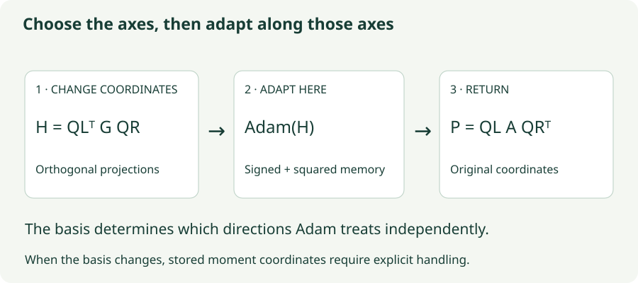

SOAP: Adam in a Learned Basis
Rotate into Shampoo’s eigenbasis, apply Adam, and understand why changing coordinates requires care.
Shampoo uses matrix statistics to identify directions and rescale them. SOAP separates those two jobs: use Shampoo-like statistics to choose a useful coordinate system, then let Adam maintain individual adaptive scales inside that coordinate system.
This is more than a change of notation. Adam is coordinate-wise, so rotating the coordinates before applying Adam can change the direction of the update after rotating back. The difficult implementation detail is what happens to stored state when that coordinate system changes.
1. Learn directions from row and column histories
For a matrix gradient $G_t$, maintain symmetric row and column statistics. An exponential-average version is
Periodically estimate orthogonal eigenvector matrices $Q_L$ and $Q_R$ from these statistics. Each column of $Q_L$ is a row-space direction; each column of $Q_R$ is a column-space direction. Eigenvectors choose the axes. In SOAP’s main step, the Adam moments determine the coordinate scales.
Given a fixed pair of bases, project the gradient:
This expresses the same linear map in different input and output coordinates. Because the bases are orthogonal, the Frobenius norm is preserved: $\|H_t\|_F=\|G_t\|_F$. Projection alone neither clips nor normalizes the gradient.
2. Apply Adam, then return to parameter coordinates
While the bases are fixed, Adam in the projected coordinates follows familiar equations:
The symbol $\odot2$ emphasizes that $H_t$ is squared entry by entry, not multiplied by itself as a matrix. Apply $W_t=W_{t-1}-\eta P_t$, with a separately specified weight-decay convention if needed. Bias correction uses the same moment-history reasoning as the Adam chapter.

3. Why rotating before Adam changes the answer
A two-coordinate example isolates the issue without matrix notation. Start with $g=(3,1)$ and zero Adam state. With negligible epsilon, Adam’s first normalized direction in the original coordinates is $(1,1)$.
Now express the same gradient in a basis rotated by 45°. With $Q=\tfrac1{\sqrt2}\left[\begin{smallmatrix}1&-1\\1&1\end{smallmatrix}\right]$,
Adam’s first direction in those coordinates is $(1,-1)$. Rotate it back: $Q(1,-1)=(\sqrt2,0)$. We obtained a different direction from the same gradient. Both directions have norm $\sqrt2$, so this difference cannot be explained by a simple global learning-rate change.
The reason is the nonlinear, coordinate-wise normalization. In general, rotating a normalized vector differs from normalizing a rotated vector. SOAP deliberately uses gradient statistics to choose where that coordinate-wise adaptation happens.
4. Lab: hold the basis fixed and inspect every quantity
A calibration gradient $C=U\operatorname{diag}(4,1)V^\top$ provides earlier statistics $L=CC^\top$ and $R=C^\top C$. The controls rotate $U$ and $V$. The lab computes the eigenbases from $L$ and $R$, then freezes them to isolate the rotated-Adam step.
The current supplied gradient is $G=\left[\begin{smallmatrix}3&1\\1&0.5\end{smallmatrix}\right]$. A second scenario reverses its top-right entry after five updates. Both comparisons start with fresh Adam moments and use $\beta_1=0.9$, $\beta_2=0.99$. The calibration gradient chooses the basis but is not counted as an Adam update.
Adam depends on its coordinate system
Compare the ordinary Adam direction with the projected-and-returned direction. The middle and right panels are both expressed in the original parameter coordinates.
- Use zero angles: both calibration matrices are diagonal and both bases are the identity. The two directions should match.
- Rotate a basis: reset the moments and inspect the changed projected gradient and resulting direction.
- Reverse one entry: watch signed and squared moments respond differently over steps 6–12. The bases remain fixed; any change now comes from Adam’s memory.
5. Updating a basis is also a state-management problem
A full SOAP optimizer periodically refreshes its bases. It cannot treat every stored number as if it already belonged to the new coordinates. For the first moment, exact transport is possible. If $m_{\rm old}$ is stored in the old bases, then
This first maps the old representation back to original coordinates, then projects it into the new bases. Alternatively, keep the first moment in original coordinates and project it when needed. Both preserve the same underlying matrix, provided the bookkeeping is consistent.
The second moment is harder. An array of coordinate-wise squares stores only the diagonal of a much larger second-moment matrix over flattened coordinates. Under a general rotation, the new diagonal also depends on cross terms that were never stored.
For a simple example, both second-moment matrices $\left[\begin{smallmatrix}1&0\\0&1\end{smallmatrix}\right]$ and $\left[\begin{smallmatrix}1&1\\1&1\end{smallmatrix}\right]$ have diagonal $(1,1)$. After a 45° rotation, their diagonals become $(1,1)$ and $(2,0)$ respectively. The old diagonal alone cannot tell you which answer is correct.
Therefore a full implementation needs an approximation for this state, not merely “rotate $v$ like a gradient.” The reference code transports the first moment, updates bases with a power/QR procedure, and reorders second-moment entries to match eigenvector ordering. It does not reconstruct a missing full covariance. Slowly changing bases and fresh moment updates make this a practical approximation.
6. Which gradient gets to choose the basis?
There is also a timing choice. The reference implementation initializes a basis from an initial gradient without taking a parameter step, then projects later gradients using the existing basis. It updates preconditioner statistics after the parameter update. This avoids letting the current gradient choose its own projection before it is normalized.
The lab mirrors that separation using one calibration gradient and a frozen basis. It is intentionally a controlled component experiment, not a complete SOAP training implementation. A production implementation also needs basis-refresh scheduling, second-moment approximation, parameter-shape handling, and numerical safeguards.
# One conceptual step while QL and QR are held fixed.
projected = QL.T @ grad @ QR
m = beta1 * m + (1 - beta1) * projected
v = beta2 * v + (1 - beta2) * projected.square()
m_hat = m / (1 - beta1 ** step)
v_hat = v / (1 - beta2 ** step)
local_direction = m_hat / (v_hat.sqrt() + eps)
direction = QL @ local_direction @ QR.T
parameter -= lr * direction
# Separately update row/column statistics and, when due,
# refresh bases with consistent moment-state handling.7. How this differs from Shampoo and Muon
In original Shampoo, both the eigenvectors and eigenvalues of the histories determine matrix-power factors. In SOAP, the histories supply a basis, and per-coordinate Adam moments in that basis continue adapting even between expensive basis refreshes. Freezing the basis therefore does not freeze all adaptation.
The SOAP paper motivates the method through an idealized equivalence between a modified Shampoo with inverse-half powers and Adafactor in the learned basis. That statement has normalization and statistical assumptions; it is not an identity between SOAP and the original inverse-fourth-root Shampoo rule from the previous chapter.
Muon transforms singular values of a momentum matrix directly. SOAP learns longer-term row and column bases and keeps Adam state in the resulting coordinates. Neither operation can be substituted for the other just because both involve orthogonal matrices.
8. What you pay for the learned coordinates
For an $r\times c$ parameter matrix, SOAP retains per-entry Adam moments plus row and column statistics and basis matrices. The rough state accounting includes $2rc$ for moments and multiple $r^2+c^2$ terms for matrix state. Projection and inverse projection add matrix multiplications; periodic decompositions or QR updates add further work.
Longer refresh intervals reduce expensive basis work but make the coordinate system less current. Large-dimension cutoffs, tensor reshaping, and one-sided preconditioning alter the cost and geometry. Report end-to-end time, memory, and validation quality under a tuned budget. The paper’s measured gains on specific language-model experiments are not a guarantee for another architecture or hardware setup.
9. Questions worth answering
The rotated step reduces to ordinary Adam with the same moments, correction, epsilon, and decay convention. This is a useful implementation check.
It is not an ordinary vector representation of the underlying second-moment operator. Exact rotation of its diagonal requires cross moments that a diagonal array does not contain.
No. Adam’s coordinate-wise moment estimates and scales still change each step inside that fixed basis.
Sources
Vyas et al., SOAP: Improving and Stabilizing Shampoo using Adam; authors’ reference implementation. The rotation example, missing-cross-moment example, and frozen-basis lab are original constructions. The equations use the conventional corrected-Adam denominator; exact library epsilon placement and update timing should be checked when reproducing a run.